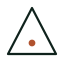
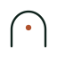
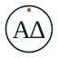
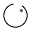

Logo directions · 2026
Πέντε σήματα.
Μία ίδια φωνή.
Ίδια χρώματα, ίδια τυπογραφία, ίδιο wordmark. Αλλάζει μόνο το mark. Δοκιμή σε header και favicon — χωρίς αλλαγή στο live site.
Current
Το σημερινό τρίγωνο + κουκκίδα. Καθαρό και αναγνωρίσιμο, αλλά διαβάζεται και ως warning/play.

Arch + light
Ανοιχτή αψίδα με μια κουκκίδα φωτός. Ζεστό, αρχιτεκτονικό, χωρίς literal ανατομία. Το πιο ισορροπημένο.

ΑΔ seal
Τα αρχικά σε λεπτή σφραγίδα. Προσωπικό, διαχρονικό, “γιατρός” χωρίς κλισέ. Στο 16px διαβάζεται ως σφραγίδα, όχι ως γράμματα.

The coil
Μία συνεχής έλικα που θυμίζει εντερική αγκύλη — αφηρημένα, όχι ανατομικό σχέδιο. Το πιο “γαστρεντερολογικό” της σειράς.
Lumen
Δακτύλιος με άνοιγμα και φως. Πιο τεχνολογικό, favicon-first, καθαρό. Λιγότερο ανθρώπινο από την αψίδα.

Open delta
Εξέλιξη του τρέχοντος Δ: ανοιχτή βάση, στρογγυλεμένη κορυφή. Κρατά την αναγνώριση, κόβει την αυστηρότητα. Η ασφαλέστερη μετάβαση.
Το preview χρησιμοποιεί τα πραγματικά tokens του site: paper #f3f0e8, ink #0f221c, clay #b0522e, GFS Didot + Manrope. Τα favicons είναι τα ίδια SVG, χωρίς ξεχωριστή απλοποίηση — γι’ αυτό φαίνεται ποιο αντέχει στο 16px. Δεν έχει αλλάξει τίποτα στο live.